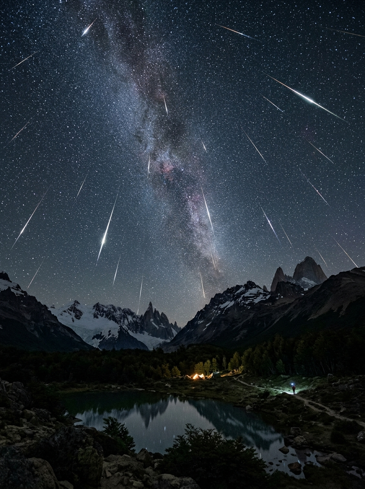

La lluvia de meteoros de las Táuridas trae consigo una espectacular vista en el cielo otoñal. Este fenómeno ocurre cuando la Tierra atraviesa los restos del cometa 2P/Encke, generando un aumento en la cantidad de meteoros visibles.
Aprendé a identificar las principales constelaciones y descubrí las historias que esconden.
Conocé qué planetas, estrellas y constelaciones podrás ver este mes desde tu ciudad.
ver mapa